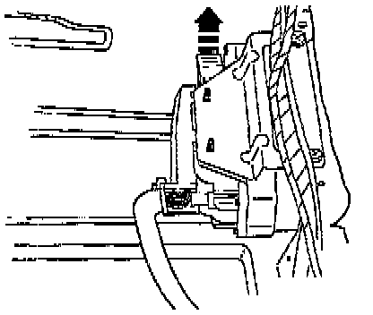
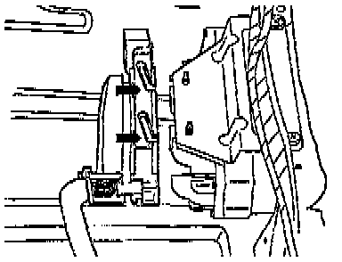

Control Module: Service and Repair

REMOVAL
- Release multi-pin connector, then pull connector off of Transmission Control Module (TCM).
- Remove TCM.

INSTALLATION
- Locate multi-pin connector on TCM pins (arrows), then lock multi-pin connector.